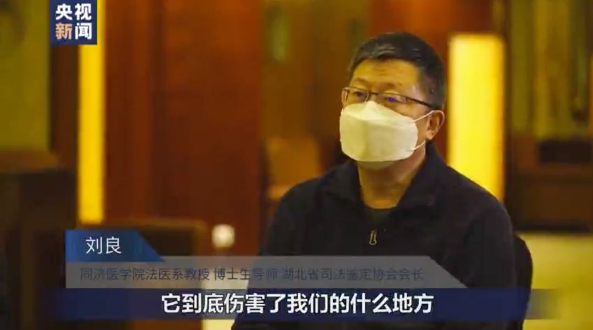
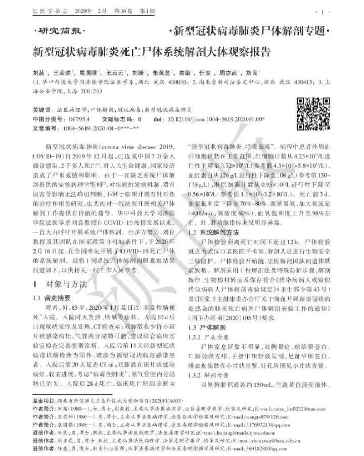

全国第一、二例新冠肺炎遗体解剖完成，尸检为何如此重要？
原文链接 备份链接 “病理诊断是疾病诊断的金标准”2月16日凌晨3点50分，全国首例新冠病毒肺炎患者遗体解剖工作在武汉市金银潭医院顺利结束，由华中科技大学同济医学院法医病理学教授刘良及其团队完成，14小时后，他们又完成了第二例遗体解剖 …
 “给做尸检的专家团队一些时间，
“给做尸检的专家团队一些时间，
让他们潜心检查、研究，不要过分打扰他们”


华中科技大学同济医学院法医学系教授刘良就新冠肺炎患者尸检接受央视采访 图片来源：央视截屏
备受瞩目的首份新冠病毒肺炎逝者遗体解剖报告出炉，2月25日的《法医学杂志》发表了《新型冠状病毒肺炎死亡尸体系统解剖大体观察报告》（下文简称《报告》），华中科技大学同济医学院法医学系教授刘良为通讯作者之一。
这份报告是刘良团队解剖的其中1例遗体的肉眼观察结果。自2月16日凌晨完成全国首例新冠病毒肺炎患者遗体解剖，在法律政策允许并征得患者家属同意后，刘良团队共完成了9例遗体解剖。此外，中科院院士、病理学专家卞修武与上海瑞金医院团队也已完成2例新冠肺炎遗体解剖。
多位临床病理学专家表示，新冠肺炎的发展过程、发病机制还不清晰，在“大体观察”之后，还需要显微镜观察、分子检测观察与研究，以完善对疾病的认知，指导诊断治疗和疫情防控。
“现在要继续加紧完成手头的工作。时间有限，拜托请各位别打扰。”刘良28日下午5时许写道。
损伤深部气道和肺泡
《报告》中这位85岁的男性患者于2020年1月以“多发性脑梗死”入院，住院后28天死亡，临床死亡原因诊断为“新型冠状病毒肺炎、呼吸衰竭”。
2月17日下午，国家卫健委高级别专家组组长、中国工程院院士钟南山在广州与支援武汉的广东医疗队连线远程会诊，提及“新冠肺炎重症救治的主要困难在于病情有着不同的发展规律，随着危重症的发展，病毒会持续损伤肺部，包括对肺实质的损伤、肺的分泌粘液阻碍气道通畅等。”
2月24日一早，钟南山给刘良打电话，说前线医生就等他的尸检结果了，否则不知道治疗到底怎么办、治疗效果怎么评估。“我着急，赶快抓紧时间，（当时）其实已经开始有初步结果了。”刘良在接受央视新闻采访时表示。
从解剖结果来看，该例患者肺部损伤明显，肺肉眼观呈斑片状，可见灰白色病灶及暗红色出血，切面可见大量黏稠的分泌物从肺泡内溢出。尸体检验肉眼所见与影像学改变分布情况相符合，且病变进一步进展。考虑影像学所见磨玻璃状影与肉眼所见肺泡灰白色病灶对应，提示新冠病毒主要引起深部气道和肺泡损伤为特征的炎性反应。
与此同时，一个网上流传很广的消息称，“病患遗体解剖发现死亡者肺部出现大量痰栓，痰栓是由呼吸机使用所产生的，痰栓最终致人缺氧而死。”并表示新冠感染死亡人数下降是因为刘良的尸检结果改变了临床治疗方法，“急救改用吸痰机”。
对此，刘良马上在个人媒体平台发表“严正声明”辟谣。“我不知道信息来源，也不知道谁发的。我没有干预任何个例的临床治疗，每个病例都有他的不同特点，功劳是广大一线医护人员的，我不敢也不想贪天功。”刘良写道。
“对没有咳嗽能力的患者来说，气管插管更有利于把痰引流出来。” 苏北人民医院重症医学科主任郑瑞强对《中国新闻周刊》说，他从2020年除夕夜前就开始在武汉市肺科医院对口支援，这是最早开始收治新冠病毒肺炎患者的医院之一。
他还表示，在《报告》发表之前，一线医生也已经发现了重症患者有痰液粘稠的临床表现，患者插管后，可采用俯卧的方式将痰液引流出体外，或插管后通过气管镜发现粘液在支气管上的具体位置，有针对性地将其吸出、清理干净。
“《报告》观察到的弥漫性肺泡损伤、透明膜形成等与临床上呼吸窘迫综合征（ARDS）病人中晚期的治疗难点类似。”郑瑞强说，临床治疗上可能要提前预警，早插管、早期积极使用气管镜、俯卧位等手段促进痰液引流。“网传把呼吸机改换吸痰机，纯属胡说八道。”郑瑞强说，目前有诸多技术手段可以在使用呼吸机的同时吸痰，中途停用呼吸机必然会造成患者低氧，这并不是最科学的方法。
《报告》还显示，死者胸腔积液量不多，淡黄色清亮液体，未见大量胸水产生，提示胸腔病变并非浆液性炎症为主。
此外，《报告》中的患者肝、肾功能指标未见明显异常，消化系统损伤情况肉眼观不明显。因患者临床资料显示存在冠心病、心绞痛病史，心肌及心外膜是否存在与病毒感染相关的损害表现，还有待进一步研究。
“有些是患者本身基础病导致的病理改变，可能定新冠病毒关系不大，《报告》中没有描述显微镜下的发现，此时要耐心等待后续病理结果，不宜过分解读。” 美国芝加哥大学医学院教授、武汉大学病理中心主任肖书渊对《中国新闻周刊》解释说，病理结果还有赖于医生个人专业知识与经验积累，“没有亲自看到标本的任何人仅凭文字都无法给出客观的判断。”肖书渊说。
有关新冠肺炎后期病情进展迅速、心脏受损严重，病理学专家、南方医科大学病理学教授丁彦青在与卞修武讨论后推测“可能是细胞因子风暴引起的”。
2003年，丁彦青首次在英国《病理学杂志》上提出“肺和免疫器官是SARS病毒攻击的主要靶器官”，2006年再发表“SARS发病免疫病理机制研究”，提出“促炎症因子”过度表达与SARS急性肺损伤及全身多器官的损害密切相关，也就是现在所说的“细胞因子风暴”。
丁彦青说，与SARS起病凶猛不同，这次新冠病毒肺炎潜伏期长，早期病症轻，需要选择不同病情的病例，例如治疗一段时间后突然病情加重而死亡的案例，可能会更全面地反映疫情整体情况。
另一篇由新冠死者尸体穿刺取样获得的组织局部病理学改变提示，新冠患者病理特征与SARS和MERS（中东呼吸综合征）冠状病毒引起的病理特征非常类似，但从刘良团队系统解剖的大体观察来看，患者肺部纤维化及实变没有SARS导致的病变严重，而渗出性反应较SARS 明显，考虑可能与此例患者从确诊到死亡仅15天，病程较短有关，有待更多系统尸体检验资料及组织病理学验证。
“两篇病理结果并不矛盾。”郑瑞强解释说，不同患者的病理表现会因病程不同、治疗方法不同而存在差异。“病人生前的干预治疗是怎么样的，治疗措施对病理表现的影响是什么，这对临床的指导将更有针对性。”郑瑞强解释说，一方面可以在重症病人治疗上更有效地阻断病程进展，另一方面，了解肺损伤是由病毒攻击所致，还是治疗技法带来的，将不同病理表现与具体治疗技法、参数结合，可指导临床上给患者机械通气的同时更好地实施肺部保护，而这还需要进一步病理分析的支持。
“给做尸检的专家团队一些时间，让他们潜心检查、研究，不要过分打扰他们。”肖书渊在采访过程中一再强调。
首份新冠肺炎遗体解剖报告已发表 图片来源：法医学杂志
病理诊断是“金标准”
早在春节前后，中国病理学界专家就开始在微信朋友圈呼吁“做病例尸检”。1月29日，中国科学院院士卞修武就向中国疾病预防控制中心发出了《关于开展新型冠状病毒感染死亡病例尸检工作的建议》（下文简称《建议》），当天国家卫健委通报全国确诊病例7711例，累计死亡170例。
病理诊断被称作疾病诊断的“金标准”，对病因的研究有助于临床上有的放矢地治疗。2003年SARS爆发后，病原体最初被认为是破坏力并不大的“衣原体”，但患者病情重、死亡率高，应用抗生素无效。丁彦青完成首例SARS死者解剖后，结合当时在南方医院进行的4例尸检结果，综合判断病原体应为“病毒”，这为非典治疗提供了重要科学依据。
此次新冠疫情中，早在1月26日，中国疾控中心病毒病预防控制所所长许文波就在工作介绍会上表示，该中心已成功分离病毒。
“但是，这一新发传染病的发病机制、病理特征及其相关临床病理联系目前尚处于未知状态。这对于进一步改进诊疗方案，提高救治水平，防控今后可能的类似疾病，十分不利。”卞修武在《建议》中写道。
2月14日，刘良也在个人媒体平台上“呼吁尽快开展新冠肺炎死亡个体尸体检验”。当时全国确诊数已达到63946例，1382人死亡，但还没有对死亡个体开展系统性实体解剖及病理学检验。
为什么上呼吸道病毒检测阳性远低于下呼吸道？患者肺部“磨玻璃样”病理学改变与其他的病毒性肺炎有何异同？后期病情进展迅速的原因和机制是什么？新冠病毒肺炎在临床治疗过程中有许多问题还未得到科学解释。
第二天上午11点，刘良收到了国家卫生健康委员会医政医管局回复，获邀参加新冠肺炎病死病例尸检相关事宜会议，他本来“乐观估计尸检落地还需要2～3天”。
通知比预想来得更早。2月15日晚9点，正在等待回复的刘良突然接到武汉市金银潭医院院长张定宇的电话，“有一个可以做解剖的了。”事后刘良回忆道，“国家、省市卫健委打破常规，先行动，然后下正式文”。
刘良紧急安排团队人员从武汉市各个角落汇集到医院。与此同时，金银潭医院专门腾出了一间负压洁净手术室，确保解剖的同时不让病毒扩散。
穿着令人呼吸困难的防护服等到凌晨1点多，刘良团队开始尸检，3点50分，首例尸检工作顺利结束。16日上午11时许，刘良再次接到金银潭医院院长张定宇通知，“又有一例需要尸检。”急招队员，再次赶赴医院，当天下午4点开始解剖，6点半结束时，“浑身湿透”的刘良倍感寒冷，马上回家再次自我隔离，并记录下连续工作18小时的经过。
“终于知道隔离防护服的厉害了。穿上不到10分钟，满头大汗，结果在干平时轻松可以干的活时，汗如雨下，呼吸困难，眼镜护目镜朦胧一片。像高原反应一样，第一例做到大半截，出现心慌头晕低血糖表现。一方面说明自己确实老了。但真的体会到医护人员的艰辛和付出。必须要向所有普普通通的一线医护战士致敬！”刘良回忆道。
在第一、二例遗体解剖完成的同时，卞修武及其团队也在中部战区医院搭建了符合生物安全保护Ⅲ级（BSL-3）标准的“帐篷式”尸体解剖室，开展新型冠肺炎尸体解剖工作。
目前11例捐赠遗体中，年龄偏大，多超过60岁，也有80多岁高龄的捐赠者，最小一例为52岁。据刘良介绍，他们与华中科技大学同济医学院病理系主任王国平合作，有3例病理诊断的初步结果已经出来了，如免疫组化、特殊染色等更深入的检查正在抓紧做。
“国内临床病理很少开展尸检，医院病理科没有基本解剖的条件。”肖书渊解释说，缺少符合标准的尸体解剖实验室确实是尸检直到2月中旬才开展的一个客观原因，新冠又是一种传染力很强的疾病，进行尸检需要向上汇报、再通过审批，这个过程需要时间，肖书渊提出，可以采用“微创病理检查”。
实际上，首份新冠遗体穿刺样本病理报告已于2月18日在《柳叶刀-呼吸医学杂志》线上发表，该报告由解放军总医院第五医学中心病理诊断与研究中心主任赵景民团队和中国科学院院士、第五医学中心感染性疾病诊疗与研究中心王福生团队联合完成。
“该患者27日死亡，在取得家属同意和相关手续后，我们做了穿刺，病理结果第一时间报告给了疫情防控部门，随后才发表在期刊上。”赵景民介绍说，考虑到没有符合尸体解剖的客观条件，团队选择了微创穿刺取样，对死者遗体损伤小，不会造成环境污染，而且传染风险小，保护操作者的安全。
尸体解剖实验室的缺位
2003年首例SARS尸体解剖时，这一传染病的名字还没确定，还被称为“不明原因的肺炎”，当时丁彦青团队基本没有防护，只带了普通口罩，现在想来仍觉“不可思议”。这一特殊时机下的非常举措为了解SARS的病理变化和发病机制做出了贡献，但缺乏生物安全保证，不可推广复制。
到2003年5月，北京大学医学部病理学系教授宫恩聪等人与解放军防化研究院专家共同在北京地坛医院内建立了BSL-3尸体解剖实验室。地坛医院原名“北京第一传染病医院”，官网介绍，医院主要承担除结核病以外的38种法定传染病的诊治、研究和培训任务。
地坛医院的BSL3实验室分为污染区、缓冲区1、半污染区、缓冲区2和清洁区，各区之间由空气密闭式门衔接。资料显示，污染区内中央为尸体解剖台，新风自解剖台上方排下, 外排风在周围墙根部抽出,在解剖人员和遗体之间形成气幕隔离。
“尸体解剖室的技术要求较高，这主要是为了避免对外部环境造成污染，关键是污血、污水处理，以及空气处理。”解放军总院第五医学中心病理诊断与研究中心主任赵景民对《中国新闻周刊》说，他曾于2003年3月8日参与北京地区首例SARS死亡病例的尸体解剖。
地坛医院BSL3实验室对医护人员个体防护和要求还有一套规范。要求进入污染区的工作人员必须内穿消毒衣、裤，外层穿军用无渗漏防化服和防毒面具，戴三层橡皮手套，最外层手套用不干胶带封闭。该实验室还对工作人员解剖完毕时、进入半污染区、进入缓冲区2等环节的具体动作做出了明确要求。
该实验室共完成了15例临床疑似SARS和SARS死亡病例的病理解剖工作, 其中7例为病理确定诊断的SARS 死亡病例。参加SARS 死亡病例的病理解剖的工作人员共23人, 2003年5月到7月连续工作2个月余, 无1人发生交叉感染。
“不是防护服穿得越多越安全，正规防护即可。”肖书渊介绍说，在常规负压手术室操作，一副手套就够，3层手套则会限制操作。这得益于美国医院采取的全面防护设计，污水、污血、空气均经过规范处理，“医院病理尸检室对待任何尸体都会认为有潜在感染性，日常也会见到各种各样的传染病，不必因死者生前有某种传染病而单独拿出来特殊对待。”肖书渊说。
根据北京市确定的2005年重点建设项目，曾收治过非典病人的北京地坛医院于2008年整体搬迁到了京郊。BSL3实验室拆除后并未在新院址复建，这得到了地坛医院病理科主任王鹏的确认。
2009年6月，公安部发布了《尸体解剖检验室建设规范(GA/T 830-2009)》，该标准适用于法医学时间解剖检验室的建设。“大家熟知的生物实验室有建设标准，但临床尸体解剖实验室目前还没有国家标准，就无法挂牌、开展工作，需要政策扶持。”赵景民说。
与尸检实验室缺失相对应的是，国内尸检率的下降。尸体解剖的普遍程度，在一定意义上反映了一个国家的科技与医疗发展水平。但从1990年代到21世纪初的近20年，“中国大多数的大型( 1500床位以上) 教学医院的常规尸检率不足1%，许多医院己多年未进行过尸检。”著名病理学专家、原长海医院病理科主任朱明华在《我国病理尸检的过去和现状》中写道。
朱明华将尸检率下降的原因归结为医院行政领导和卫生行政管理机构不重视、临床医生不愿争取尸检、相关法规执行不到位等因素。
原卫生部曾在颁发的“医院分级评等标准”中规定,三级甲等医院尸检率应达到15%,二级医院应达到10%。然而各级医院尸检率远未达标，《首都医药》杂志曾在2007年第一期刊文《医院“尸检率”集体滑坡——部分二级医院甚至出现“零尸检”》。“法规的制定固然重要,但认真执行则更重要。”朱明华写道。
新冠病毒肺炎爆发后，丁彦青曾建议南方医院改建尸体解剖室，以达到生物安全保护Ⅲ级标准，这一建议已经反映给广东省卫健委。
“我国缺少针对甲类传染病的解剖室，这个问题现在已经很紧迫了，新冠病毒之后还将面临什么，我们不知道，但要做好准备，”丁彦青呼吁，“至少一个省要有一间生物安全保护Ⅲ级(BSL -3)尸体解剖实验室。”
值班编辑：冯超
推荐阅读
▼


封面报道
《新冠病毒——我们要付出多大代价》
《围城之战——我们如何过关》
《武汉攻坚——我们如何与疫情赛跑》
《防控之辨——我们怎样科学应对》
***点击下图，一键下单***

* *
*

原文链接 备份链接 “病理诊断是疾病诊断的金标准”2月16日凌晨3点50分，全国首例新冠病毒肺炎患者遗体解剖工作在武汉市金银潭医院顺利结束，由华中科技大学同济医学院法医病理学教授刘良及其团队完成，14小时后，他们又完成了第二例遗体解剖 …
原文链接 备份链接 2月28日，《法医学杂志》发布了《新型冠状病毒肺炎死亡尸体系统解剖大体观察报告》。这是新冠肺炎爆发以来的首例完整的尸体解剖。该例尸检的参与者刘良曾经说过：“解剖的必要性之一，就是要弄明白这个病毒是通过什么机制让肺受到损 …
原文链接 备份链接 记者/韩谦 魏晓涵 *编辑/石爱华宋建华* 进行病理解剖的刘良团队 经历了一个多月的等待后，华中科技大学同济医学院法医病理学教授刘良带领的团队，于2月16日凌晨3点50分，完成了第一例新冠肺炎死亡病例的尸体解剖。 截 …
原文链接 备份链接 研究者正试图揭示新冠病毒的致病性、致死性机制，为临床治疗提供新依据，阶段结果是新冠病毒的致病特征与SARS相似，而进一步的结果或将由解剖揭开 2020年2月初，武汉金银潭医院隔离病区内，医护人员正在给新冠肺炎患者做治 …
原文链接 备份链接 2 月 17 日，《柳叶刀 · 呼吸医学》（_The Lancet Respiratory Medicine_）在线发表了首份基于尸检样本的新冠肺炎病理学报告。 该论文通讯作者之一为中科院院士、解放军总医院第五医学中心 …